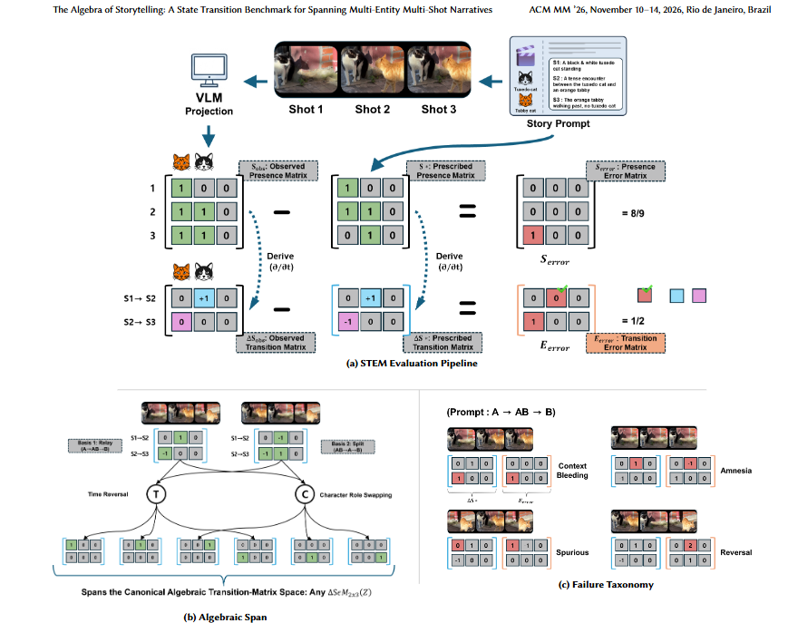

Dongwoo Lee
Department of Computer Science and Engineering
Sogang University
Seoul, Republic of Korea
dongwoolee@sogang.ac.krACM Multimedia 2026
SPAN / STEM
Abstract
Multi-shot video generation models can now produce visually coherent sequences, yet they face a fundamental consistency-dynamics trade-off: the mechanisms that maintain visual consistency across shots - shared attention, in-context conditioning - prevent models from executing the dynamic entity entrances and exits that define storytelling. Current evaluation paradigms are heavily optimized for visual quality and visual consistency, systematically overlooking this trade-off by reducing complex narrative dynamics to simple frame-by-frame image comparisons. We present the Span (State Progression and Algebraic Narrative) framework, which formalizes multi-entity, multi-shot narratives into state transition matrices that algebraically encode character entrances and exits. Crucially, we prove that every conceivable narrative topology can be generated from just two fundamental basis patterns (Relay and Split) by applying intuitive narrative operations - such as time reversal and character role swapping. This elevates video evaluation from heuristic prompting to mathematically complete formal verification. To evaluate generated videos, we introduce Stem (State Transition Error Matching). Instead of relying on scalar similarities, Stem constructs an error matrix that isolates all narrative deviations by comparing the observed transitions against the prescribed script. This matrix is then decomposed in a sparsity-aware manner to decouple detector noise from true narrative signals, yielding two complementary metrics: Prescribed Transition Match (PTM) for microscopic transition fidelity and Entity Presence Accuracy (EPA) for macroscopic cast compliance. On the MEMS-1K (Multi-Entity Multi-Shot) benchmark across four major video generation architectures, PTM clearly discriminates model performances, revealing a vast capability gap and a consistent rank reversal against Identity Consistency - empirically exposing this previously invisible consistency-dynamics trade-off. Furthermore, the algebraic structure of the error matrix naturally induces a comprehensive taxonomy of narrative failures (e.g., characters failing to exit or missing their entrances), providing structured, actionable diagnostics beyond simple scalar scores.
